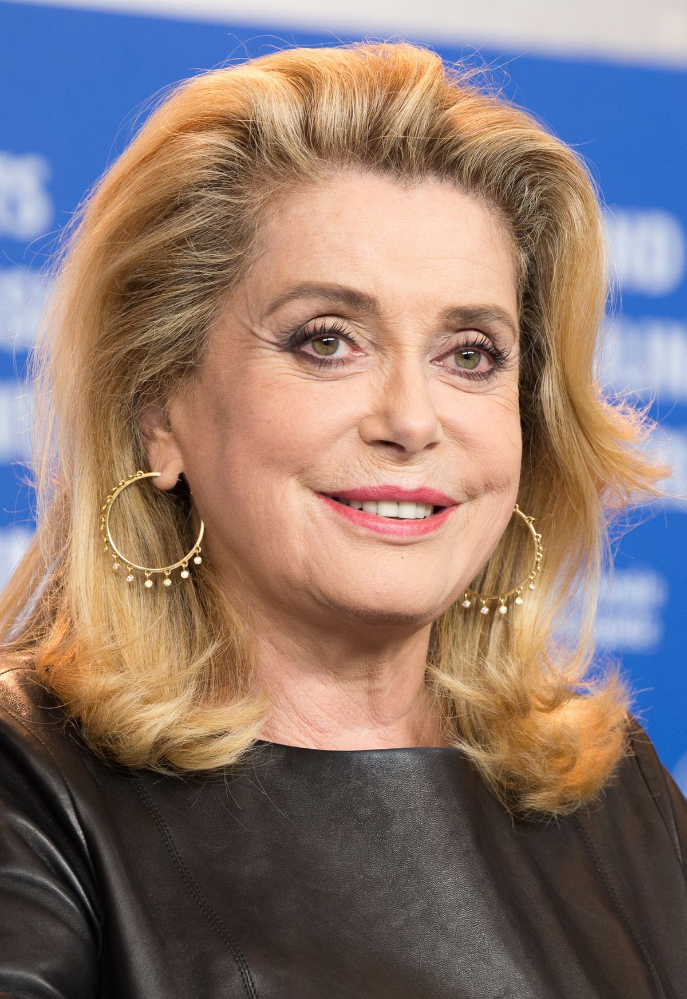
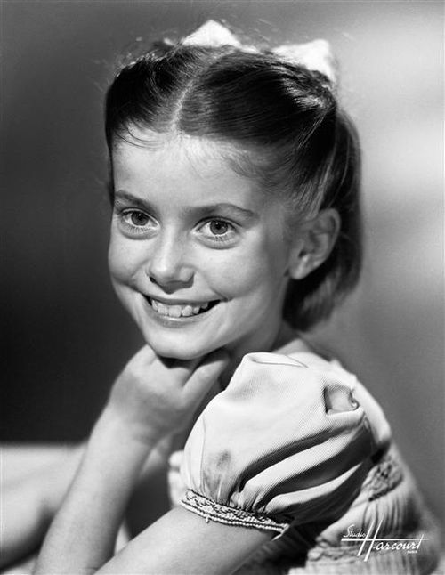
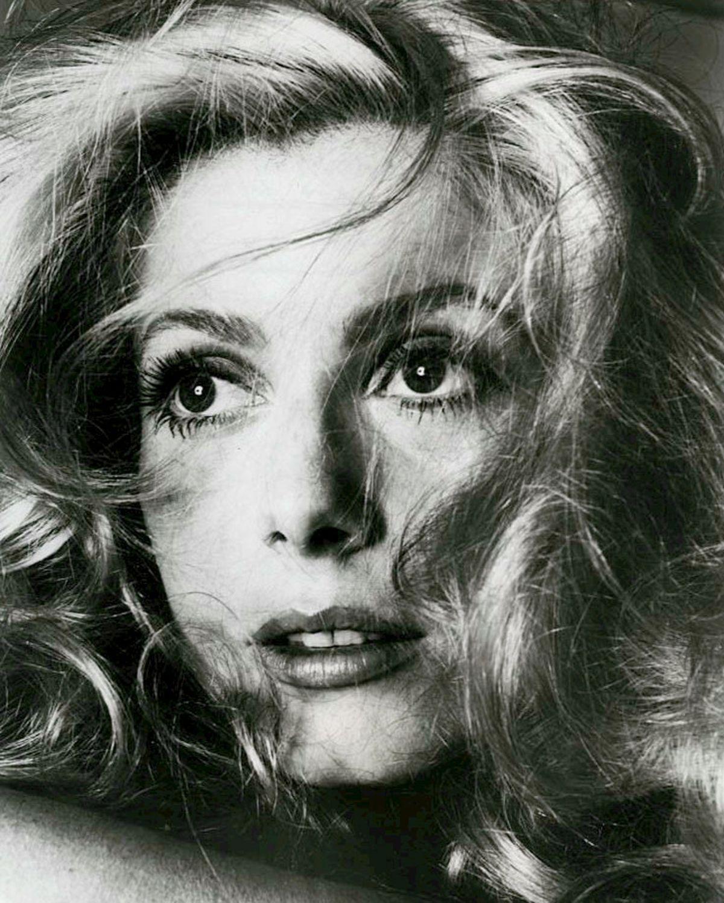
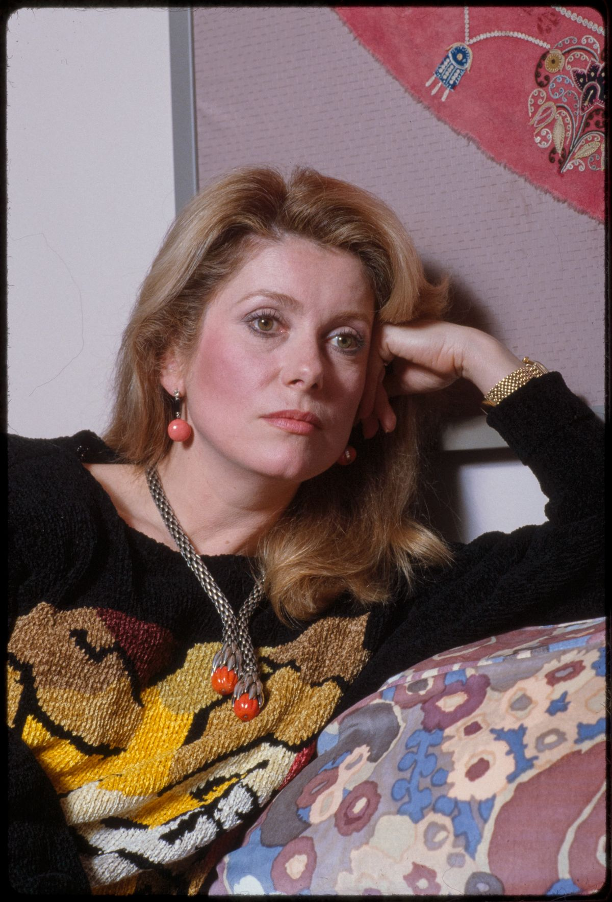
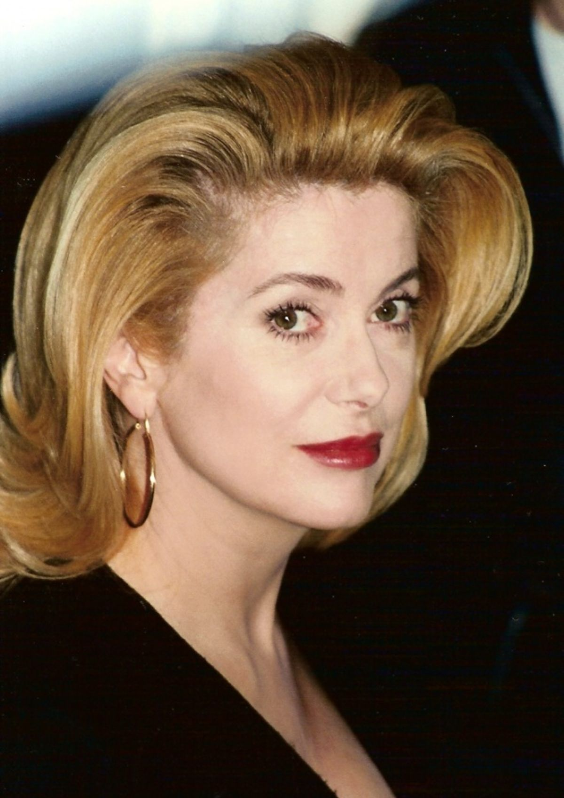
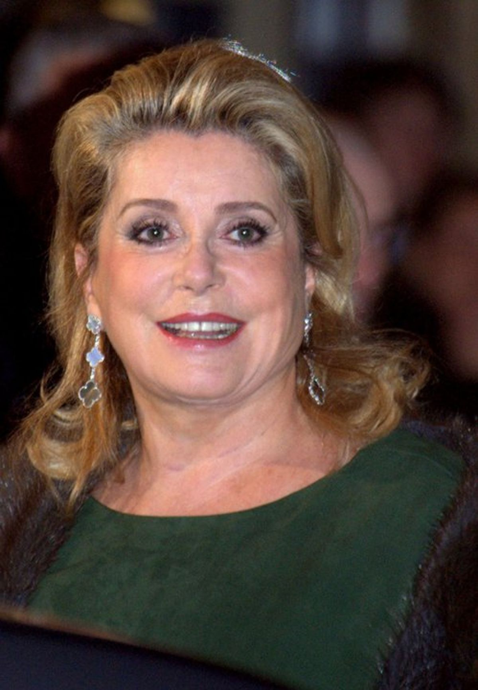

Catherine Deneuve Biography: Age, Movies, Oscar, Net Worth and Family
She is the face of French cinema — the cool, elegant star of The Umbrellas of Cherbourg, Repulsion and Belle de Jour, the woman who became the face of France itself. Catherine Deneuve has been acting for nearly seventy years, from a small role at thirteen to more than a hundred films, and she is still working at eighty-three. She has won the César Award for Best Actress twice, was nominated for the Academy Award for Indochine, and was the partner of Marcello Mastroianni, the subject of the previous article on this site. She is the fifth French celebrity on Stars of Europe, after Omar Sy, Marion Cotillard, Jean Reno and Mastroianni’s great co-star — and hers is the first article on this site with a genuine childhood photograph: a 1952 portrait taken when she was about nine.

Key takeaways
- Born 22 October 1943 in Paris as Catherine Fabienne Dorléac; she is 83 and still acting, with a career running from 1957 to the present and more than 100 roles.
- She became a star with Jacques Demy’s musical The Umbrellas of Cherbourg (1964), which won the Palme d’Or at Cannes, and became world-famous as the cool, mysterious heroine of Polanski’s Repulsion (1965) and Buñuel’s Belle de Jour (1967).
- She has won the César Award for Best Actress twice — for The Last Metro (1980) and Indochine (1992) — and was nominated for the Academy Award for Best Actress for Indochine.
- She was the partner of Marcello Mastroianni from 1970 to 1974, made four films with him, and is the mother of his daughter Chiara Mastroianni.
- In 1985 she became the official face of Marianne, the national symbol of France, and she was the face of Chanel No. 5 and the muse of Yves Saint Laurent.
- Unlike Benigni and Mastroianni, a childhood photograph of her does exist on Wikimedia Commons — a 1952 Studio Harcourt portrait taken when she was about nine.
Who Is Catherine Deneuve?
| Full name | Catherine Fabienne Dorléac |
|---|---|
| Date of birth | 22 October 1943 |
| Age | 83 (as of November 2026) |
| Birthplace | Paris, France |
| Nationality | French |
| Profession | Actress |
| Years active | 1957–present |
| Spouse | David Bailey (married 1965; divorced 1972) |
| Partners | Roger Vadim, Marcello Mastroianni, Hugh Johnson, Pierre Lescure |
| Children | Christian Vadim, Chiara Mastroianni |
| Net worth | Not stated — no reliable estimate found |
Catherine Deneuve is widely considered one of the greatest European actresses on film. In 2020, The New York Times ranked her among the greatest actors of the 21st century. In a career spanning nearly seventy years, she has played more than a hundred roles, working with the greatest directors of French and world cinema — Jacques Demy, Roman Polanski, Luis Buñuel, François Truffaut, Agnès Varda, Lars von Trier — and she is still acting today. She is the fifth French celebrity on this site, after Omar Sy, Marion Cotillard, Jean Reno and Marcello Mastroianni’s great co-star — and her story is directly linked to his: she was his partner for four years, made four films with him, and is the mother of his daughter Chiara.
Her screen image is famous around the world: cool, elegant, a little distant, a beautiful woman who never quite lets you in. Early in her career she was nicknamed the “ice maiden” after her English-language debut in Polanski’s Repulsion, and the nickname stuck for decades. But the cool surface hides a remarkably long and varied career — musicals, thrillers, erotic dramas, comedies, art films and Hollywood pictures — and a public life in which she has been, at different times, the face of France itself, a fashion icon, a UNESCO ambassador and one of the most outspoken voices in French cultural life.
Age and Early Life — A Paris Childhood
Catherine Fabienne Dorléac was born on 22 October 1943 in Paris, the daughter of French stage actors Maurice Dorléac and Renée Simonot. She had two sisters, Françoise Dorléac (21 March 1942 – 26 June 1967) and Sylvie Dorléac (born 14 December 1946), as well as a maternal half-sister, Danièle, whom their mother had out of wedlock in 1936. She took her mother’s maiden name, Deneuve, as her stage name, in order to differentiate herself from her sisters. She attended Catholic schools in Paris.


Her older sister Françoise, who inspired her to take up acting, became a film star herself in the 1960s, and the two sisters made one film together, The Young Girls of Rochefort (1967) — playing twins. Françoise died in a car accident a few months after the film opened, at the age of 25, and Deneuve has spoken of her rarely and with great feeling ever since.
One difficult fact about her family became public only in 2007, when the unauthorised biography Deneuve, l’affranchie, by the French journalist Bernard Violet, revealed that her father had worked for Radio Paris, a station controlled by the Nazis during the German occupation of France. According to Le Monde and Le Parisien, Maurice Dorléac took part in 76 radio broadcasts or plays for the station and appeared in two propaganda short films for the Milice in 1944; after the Liberation he was charged with national indignity and sentenced to a six-month ban from working in theatre and cinema. Deneuve tried to block the book from being published and, in a 2009 interview with The Guardian, expressed anger at the portrayal of her father and said she wanted to take legal action on his behalf, accusing the author of inventing facts — although her father’s wartime broadcasts and the charge against him are backed by public archives. In the end she did not sue the author or the publisher.
First Films — From Child Actress to Stardom
Deneuve made her film debut at thirteen, with a small role in André Hunebelle’s Les Collégiennes (1957), filmed the previous year when she was only twelve, alongside her younger sister Sylvie. She subsequently appeared in several films for the director Roger Vadim, and in L’Homme à femmes (1960), which caught the eye of Jacques Demy. Demy cast her as Geneviève Emery, a sixteen-year-old in love, in his romantic musical The Umbrellas of Cherbourg (1964) — the film that brought her to stardom.
The Umbrellas of Cherbourg — The Film That Made Her
The Umbrellas of Cherbourg (Les Parapluies de Cherbourg, 1964) is one of the most beloved French films ever made: a musical in which every line of dialogue is sung, about a young umbrella-shop assistant, Geneviève, who falls in love with a garage mechanic, waits for him through his military service in Algeria, and marries another man when he does not return. The film won the Palme d’Or at the 1964 Cannes Film Festival, and Variety praised Deneuve’s performance, writing that she “etches a fine portrait of a 16-year-old in love”. She was twenty when it was filmed, and it made her famous in France and abroad overnight. She reunited with Demy for another musical, The Young Girls of Rochefort (1967), acting alongside George Chakiris and Gene Kelly — and, for the only time, alongside her sister Françoise, as her twin.
Demy remained one of the directors of her life: she worked with him again in Donkey Skin (1970), the fairy-tale musical based on Charles Perrault’s story, and in A Slightly Pregnant Man (1973). With Demy she became one of the key faces of the musical film genre, alongside her later work in 8 Women (2002) and Beloved (2011).
Repulsion and Belle de Jour — The Ice Maiden
In her English-language debut, Deneuve played the cold but erotic heroine of Roman Polanski’s psychological horror thriller Repulsion (1965), a young manicurist in London who slowly loses her mind alone in a flat. For her performance she was nominated for the New York Film Critics Circle Award for Best Actress, and the role fixed her image in the English-speaking world: beautiful, distant, a little frightening. The Guardian’s Peter Bradshaw later wrote that her “glassy stare of anxiety dominates the movie”.


Two years later came the film that made the image permanent: Luis Buñuel’s Belle de Jour (1967), in which she plays Séverine, a young bourgeois wife who spends her weekday afternoons as a high-class prostitute while her husband is at work. For her performance she was nominated for the BAFTA Award for Best Actress, and the film — and her performance in it — is now regarded as one of the great works of European cinema. She reunited with Buñuel for Tristana (1970), acting alongside Fernando Rey and Franco Nero, and her work for Buñuel is among her best known. In 1969 she also starred in Stuart Rosenberg’s American romantic comedy The April Fools, opposite Jack Lemmon, and in François Truffaut’s romantic crime drama Mississippi Mermaid, alongside Jean-Paul Belmondo.
Marcello Mastroianni — Four Films and a Daughter
Deneuve’s most famous relationship was with the Italian actor Marcello Mastroianni, the subject of the previous article on this site. They lived together for four years in the 1970s, made four films together between 1971 and 1974, and had a daughter, Chiara Mastroianni, born on 28 May 1972, who became an actress herself. Their first film together was Nadine Trintignant’s It Only Happens to Others (1971), in which they played a couple who lose a child; they followed it with Marco Ferreri’s Liza (1972), Jacques Demy’s A Slightly Pregnant Man (1973) and Ferreri’s Don’t Touch the White Woman! (1974).
Mastroianni was nearly twenty years her senior and still married to his wife Flora Carabella, whom he would never divorce, and the relationship ended in 1974. But the two remained connected for life through their daughter, and Chiara later acted with both of them — with her father in Three Lives and Only One Death (1996), his last-but-one film, and with her mother in Beloved (2011). Deneuve and Mastroianni’s partnership is one of the great love stories of European cinema, and it is why the two biographies on this site belong side by side: read his here.
The Last Metro and Indochine — Two Césars and an Oscar Nomination
The 1980s brought Deneuve the highest honours of French cinema. In François Truffaut’s Le Dernier métro (The Last Metro, 1980), set in Paris under the German Occupation, she played Marion Steiner, a theatre director hiding her Jewish husband in the cellar of her theatre, opposite Gérard Depardieu. For the role she won the César Award for Best Actress and the David di Donatello Award for Best Actress. Three years later she played a bisexual vampire in Tony Scott’s The Hunger (1983), co-starring with David Bowie and Susan Sarandon — a role that brought her a large cult following, especially among the gothic subculture, and remains her best-known film for English-speaking audiences.


Her second César came for Régis Wargnier’s Indochine (1992), in which she played Éliane Devries, a French plantation owner in 1930s Vietnam who adopts a Vietnamese orphan. For the performance she was also nominated for the Academy Award for Best Actress — her only Oscar nomination — and she remains one of the few French actresses ever nominated in the category. In the 1990s she also made André Téchiné’s My Favorite Season (1993) and Thieves (1996), and in 1998 she won the Volpi Cup for Best Actress at the Venice Film Festival for Place Vendôme.


She has never stopped working. Her hundredth film appearance was in Un conte de Noël (A Christmas Tale, 2008). Later work includes Lars von Trier’s Dancer in the Dark (2000) with Björk, 8 Women (2002) — for which she shared the Silver Bear for Best Ensemble Cast at Berlin — Potiche (2010) with Depardieu, Beloved (2011) with her daughter Chiara, On My Way (2013) and The Midwife (2017). She also provided the voice of Marjane Satrapi’s mother in the animated film Persepolis (2007). As of 2026, her films have sold a total of 99 million admissions in France — one of the largest totals of any French actor in history.
Marianne, Chanel and the Fashion Icon
Few actresses have ever been as closely identified with France itself as Catherine Deneuve. In 1985 she succeeded Mireille Mathieu as the official face of Marianne, the national symbol of liberty whose bust stands in every French town hall, and she held the honour until 1989. She asked that the rights owed to her for the representation be given to Amnesty International. She was the face of Chanel No. 5 in the late 1970s, and she was the muse of the designer Yves Saint Laurent, who dressed her in the films Belle de Jour, La Chamade, Mississippi Mermaid, Un flic, Liza and The Hunger, and for whose skincare line she modelled in 1992. In 1983, the cosmetics company American Home Products hired the photographer Richard Avedon to promote its Youth Garde line with her, for which she famously proclaimed, “Look closely. Next year, I will be 40.” In 2001 she became the face of L’Oréal Paris, and in 2007 she began appearing in Louis Vuitton luggage advertisements. In 2013, The Guardian listed her as one of the fifty best-dressed over-50s in the world.
She has also been a businesswoman in her own right: in 1986 she introduced her own perfume, Deneuve, and she designs glasses, shoes, jewellery and greeting cards, with eyewear licensing agreements with Viva International from 1989 and Marcolin from 2014 to 2019. In 2005 she launched a limited-edition make-up collection for MAC Cosmetics.
Personal Life
Deneuve has been married once, to the photographer David Bailey, from 1965 to 1972, though they separated in 1967. She has lived with the director Roger Vadim, the actor Marcello Mastroianni, the cinematographer Hugh Johnson and the Canal+ executive Pierre Lescure. She has two children: the actor Christian Vadim, from her relationship with Roger Vadim, and the actress Chiara Mastroianni, from her relationship with Mastroianni. She has five grandchildren.
She has not had a public relationship since her break-up with Lescure in 1991, with whom she remains friends; her two children consider him their stepfather, and according to Gala, in late 2019 she relied on him while she recuperated from a stroke. In 2020 she told Paris Match that the two still talk to each other every day. For decades she has had an apartment on Place Saint-Sulpice in the 6th arrondissement of Paris, and from 1989 to 2014 she also owned Château de Primard, a mansion in Guainville.
Besides her native French, Deneuve speaks fluent Italian and English, and has some knowledge of Spanish. Her hobbies include gardening, drawing, photography, reading, music, cinema, fashion, antiques and decoration, and according to a 1996 article in The New York Times, she is a practising Roman Catholic. On 6 November 2019, the BBC reported that she had suffered a mild stroke and was recuperating in a Paris hospital; there was no damage to her motor functions, and five weeks later she was released and spent the rest of 2019 recuperating at her Paris home. She began smoking in 1960 at the age of sixteen, and has been known to smoke up to three packs a day; she quit in 1985 with the aid of hypnotherapy, started again in 1996, quit again after her 2019 stroke, and by 2025 had resumed the habit with an electronic cigarette.
Public Life — Causes and Controversies
Deneuve has been politically active throughout her life. In 1971 she signed the Manifesto of the 343, in which 343 women admitted to having had illegal abortions, exposing themselves to prosecution — the manifesto was published in Le Nouvel Observateur on 5 April 1971. She is involved with Amnesty International’s programme to abolish the death penalty, and in 2001 she delivered a petition against the death penalty to the United States Embassy in Paris. In 1994 she was appointed UNESCO Goodwill Ambassador for the Safeguarding of Film Heritage, a role she held until her resignation on 12 November 2003. She is also involved with Children Action, Children of Africa, Reporters Without Borders and charities fighting AIDS and cancer.


She has also courted controversy. In January 2018, Deneuve, along with 99 other French women writers, performers and academics, signed an open letter in Le Monde arguing that the #MeToo movement had gone too far, turning into a “witch hunt”, and denouncing it as a form of puritanism; the letter defended men’s “freedom to bother women”, which the signatories said was “indispensable to sexual freedom”. The letter caused a backlash, and though she later apologised to all the victims who felt offended by it, she defended her involvement, saying there was “nothing in the letter” that said “anything good about harassment, otherwise [she] wouldn’t have signed it”.
Awards — Césars, Venice, Berlin and Cannes
Deneuve’s honours, in brief: two César Awards for Best Actress, for The Last Metro (1980) and Indochine (1992), from fourteen César nominations; a nomination for the Academy Award for Best Actress for Indochine; a nomination for the BAFTA Award for Best Actress for Belle de Jour; the Volpi Cup for Best Actress at the Venice Film Festival for Place Vendôme (1998); the Silver Bear for Best Ensemble Cast at the Berlin International Film Festival for 8 Women (2002); the David di Donatello Award for Best Actress for The Last Metro; the Honorary Golden Bear at Berlin in 1998; the Honorary Palme d’Or at Cannes in 2005; the Golden Lion for Lifetime Achievement at Venice in 2022; and the Praemium Imperiale prize for theatre and film in 2018. She was also the official face of Marianne, the national symbol of France, from 1985 to 1989.
Filmography Highlights
| Year | Title | Notes |
|---|---|---|
| 1957 | Les Collégiennes | Film debut at 13; credited as Catherine Dorléac |
| 1964 | The Umbrellas of Cherbourg | Jacques Demy; Palme d’Or at Cannes |
| 1965 | Repulsion | Roman Polanski; the “ice maiden” |
| 1967 | The Young Girls of Rochefort | With her sister Françoise Dorléac |
| 1967 | Belle de Jour | Luis Buñuel; BAFTA nomination |
| 1969 | The April Fools | With Jack Lemmon |
| 1969 | Mississippi Mermaid | François Truffaut; with Jean-Paul Belmondo |
| 1970 | Tristana | Luis Buñuel |
| 1970 | Donkey Skin | Jacques Demy |
| 1971 | It Only Happens to Others | First film with Marcello Mastroianni |
| 1975 | Hustle | Robert Aldrich; with Burt Reynolds |
| 1980 | The Last Metro | François Truffaut; César Best Actress |
| 1983 | The Hunger | Tony Scott; with David Bowie and Susan Sarandon |
| 1992 | Indochine | César Best Actress; Oscar nomination |
| 1993 | My Favorite Season | André Téchiné |
| 1998 | Place Vendôme | Volpi Cup for Best Actress, Venice |
| 2000 | Dancer in the Dark | Lars von Trier; with Björk |
| 2002 | 8 Women | Silver Bear, Best Ensemble Cast, Berlin |
| 2007 | Persepolis | Voice of Marjane’s mother |
| 2008 | A Christmas Tale | Her 100th film |
| 2010 | Potiche | With Gérard Depardieu |
| 2011 | Beloved | With her daughter Chiara Mastroianni |
| 2013 | On My Way | Emmanuelle Bercot |
| 2017 | The Midwife | With Catherine Frot |
FAQs
How old is Catherine Deneuve?
Catherine Deneuve was born on 22 October 1943 in Paris, France. She is 83 years old (as of November 2026) and is still acting — her career has run from 1957 to the present, nearly seventy years.
How many films has Catherine Deneuve made?
She has played more than 100 roles in films. Her 100th film appearance was in Un conte de Noël (A Christmas Tale, 2008), and as of 2026 her films have sold 99 million admissions in France.
Was Catherine Deneuve nominated for an Oscar?
Yes — once, for Best Actress for Indochine (1992). She did not win. She has won the César Award for Best Actress twice, for The Last Metro (1980) and Indochine (1992), from fourteen César nominations.
What is Catherine Deneuve’s most famous film?
Her breakthrough was Jacques Demy’s musical The Umbrellas of Cherbourg (1964), which won the Palme d’Or at Cannes. Internationally she is best known for Repulsion (1965), Belle de Jour (1967) and The Hunger (1983).
Was Catherine Deneuve married to Marcello Mastroianni?
No. They lived together from 1970 to 1974 and made four films together, but they never married — Mastroianni remained married to his wife Flora Carabella, whom he never divorced. Deneuve and Mastroianni had a daughter, Chiara Mastroianni, born on 28 May 1972, who became an actress. Read Mastroianni’s biography here.
Who are Catherine Deneuve’s children?
She has two children: Christian Vadim, from her relationship with the director Roger Vadim, and Chiara Mastroianni, from her relationship with Marcello Mastroianni. She has five grandchildren.
What was Catherine Deneuve’s net worth?
No reliable published estimate of Catherine Deneuve’s net worth was found — published figures disagree wildly, from $40 million to $185 million, on low-quality sites — so no figure is given in this article, and she does not appear on this site’s Top 10 Richest Celebrities page. See the Top 10 Richest page for the current ranking.
Was Catherine Deneuve the face of Marianne?
Yes. In 1985 she succeeded Mireille Mathieu as the official face of Marianne, the national symbol of liberty whose bust stands in every French town hall, and she held the honour until 1989. She asked that the rights owed to her for the representation be given to Amnesty International.
Sources
Facts in this article were checked against: Wikipedia — Catherine Deneuve (born Catherine Fabienne Dorléac, 22 October 1943 Paris; daughter of stage actors Maurice Dorléac and Renée Simonot; sisters Françoise Dorléac, 21 March 1942 – 26 June 1967, and Sylvie Dorléac, born 14 December 1946; maternal half-sister Danièle, born 1936; took her mother’s maiden name as her stage name; Catholic schools; film debut Les Collégiennes 1957 at 13, filmed 1956 at 12; L’Homme à femmes 1960; The Umbrellas of Cherbourg 1964, Palme d’Or; Repulsion 1965, New York Film Critics Circle nomination; The Young Girls of Rochefort 1967 with Françoise, her only film together; Belle de Jour 1967, BAFTA nomination; The April Fools 1969; Mississippi Mermaid 1969; Tristana 1970; Donkey Skin 1970; It Only Happens to Others 1971 with Mastroianni; Liza 1972; Un flic 1972; A Slightly Pregnant Man 1973; Hustle 1975; Le Sauvage 1975; Le Dernier métro 1980, César and David di Donatello Best Actress; The Hunger 1983; César nominations for Hotel America 1981, Agent trouble 1987 and Drôle d’endroit pour une rencontre 1988; Indochine 1992, Oscar nomination and second César; My Favorite Season 1993; Thieves 1996; Place Vendôme 1998, Volpi Cup; Dancer in the Dark 2000; The Musketeer 2001; 8 Women 2002, Silver Bear Best Ensemble; diary A l’ombre de moi-même 2005; Persepolis 2007, voice of Marjane’s mother; 100th film Un conte de Noël 2008; Potiche 2010; Beloved 2011 with Chiara; On My Way 2013; The Midwife 2017; 99 million admissions in France as of 2026; The New York Times 2020 ranking among the greatest actors of the 21st century; Playboy pictorials 1963 and 1965; Marianne 1985–1989, succeeded Mireille Mathieu, rights to Amnesty International; Chanel No. 5 face late 1970s; Youth Garde 1983, Richard Avedon, “Look closely. Next year, I will be 40.”; Yves Saint Laurent muse; L’Oréal Paris face 2001; Louis Vuitton luggage advertisements 2007; Guardian fifty best-dressed over 50s, March 2013; own perfume Deneuve 1986; glasses, shoes, jewellery and greeting cards designer; MAC collection 2005; eyewear licensing Viva International from 1989 and Marcolin 2014–2019; UNESCO Goodwill Ambassador for the Safeguarding of Film Heritage 1994 until resignation 12 November 2003; Manifesto of the 343, 1971; Amnesty death-penalty programme; petition to the US Embassy Paris 2001; 2007 petition for Ségolène Royal; 2011 petition to decriminalise homosexuality worldwide; January 2018 open letter on #MeToo, backlash and later apology to victims who felt offended; married once, David Bailey 1965–1972, separated 1967; lived with Roger Vadim, Marcello Mastroianni, Hugh Johnson and Pierre Lescure; children Christian Vadim and Chiara Mastroianni; five grandchildren; no public relationship since break-up with Lescure in 1991, remains friends, children consider him stepfather, relied on him during 2019 stroke recovery, talk every day as of 2020; apartment on Place Saint-Sulpice; Château de Primard 1989–2014; speaks fluent Italian and English, some Spanish; hobbies gardening, drawing, photography, reading, music, cinema, fashion, antiques and decoration; practising Roman Catholic per a 1996 New York Times article; mild stroke 6 November 2019, BBC, no motor damage, released after five weeks; smoking from 1960 at 16, up to three packs a day, quit 1985 with hypnotherapy, resumed 1996, quit after 2019 stroke, resumed with an electronic cigarette by 2025; father’s Radio Paris work revealed in Bernard Violet’s 2007 unauthorised biography, 76 broadcasts, two Milice propaganda shorts 1944, charged with national indignity 1945, six-month ban, Deneuve’s attempt to block the book and 2009 Guardian interview) and Encyclopaedia Britannica — Catherine Deneuve (born 22 October 1943 Paris; The Umbrellas of Cherbourg 1964; Repulsion 1965, Belle de jour 1967, Tristana 1970; Oscar nomination for Indochine 1992; 8 Women 2002; On My Way 2013; Praemium Imperiale 2018). No net-worth figure is given because published estimates disagree wildly on low-quality sites. All writing is original to Stars of Europe. Deliberately left out: claims from thin celebrity blogs; any single-figure net worth; the 2020 biography’s claim of a 56-year affair with Johnny Hallyday, which rests on a single biography; the 2017 television remark about Roman Polanski; and the May 2025 petition on Gaza, which is outside the scope of this biography. Photographs used: the 1952 Studio Harcourt childhood portrait (public domain in France); the 1969 portrait (National General Pictures, public domain); the April 1983 portrait (Bernard Gotfryd, public domain); the 1995 portrait (Georges Biard, CC BY-SA 3.0); the 2011 César Awards photograph (Georges Biard, CC BY-SA 3.0); and the 2017 Berlinale portrait (CC BY-SA 3.0) — each visually checked against the person named, and each licence confirmed on its Wikimedia Commons file page on 24 November 2026.